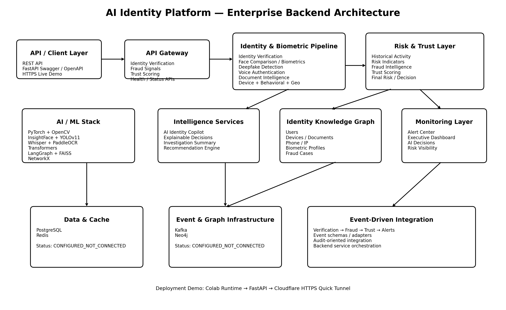

An AI-powered digital trust platform combining identity verification, biometric intelligence, deepfake detection, document intelligence, fraud intelligence, trust scoring, knowledge graph analytics, AI-assisted investigation and REST APIs.
The platform addresses digital identity fraud, deepfake impersonation, fake documents, synthetic identities and identity-related security risks. It combines multiple AI and contextual signals into a unified trust and investigation workflow.
Modern digital services face deepfake KYC attacks, AI-generated voice impersonation, forged documents, account takeover, synthetic identities and identity theft.
Build an enterprise-oriented AI platform that verifies identity, detects manipulated media, evaluates risk and provides explainable decision support.
Layered architecture with API Gateway, identity and biometric pipelines, fraud intelligence, trust scoring, knowledge graph and event-driven integration.
Complete backend package, AI modules, REST APIs, documentation, architecture diagram, technical presentation and live demonstration path.
The architecture separates API access, identity processing, AI intelligence, risk/trust processing, graph analytics and infrastructure services.

FastAPI REST entry point for verification, fraud, trust, alerts, graph and event operations.
Processes identity evidence, face comparison, voice and document intelligence.
Combines risk indicators and fraud signals to produce trust and verification decisions.
Connects identity entities and relationships for investigation and anomaly detection.
Kafka topics and event schemas are configured for asynchronous enterprise workflows.
PostgreSQL, Redis, Kafka and Neo4j adapters/configuration are included.
Identity verification scoring and decision pipeline.
Face comparison and biometric evidence processing.
AI-based real/fake classification and fake probability estimation.
Voice authentication intelligence and scoring.
OCR and document intelligence / validation pipeline.
Device-related identity and security signal.
Behavioral identity signal used in trust assessment.
Geographic identity/context signal.
Historical identity activity signal.
Aggregates identity and security risk evidence.
Combines nine available signals into a trust assessment.
Analyst Q&A, face comparison, deepfake explanation, investigation summary and action recommendation.
Models relationships between identity entities and detects anomalies.
Surfaces verification, deepfake, trust, risk and AI decision metrics.
Generates security and manual-review alerts.
Transforms fraud indicators into fraud risk and recommended action.
Python • FastAPI
PyTorch • OpenCV • InsightFace • YOLOv11
Whisper • Voice biometric processing
PaddleOCR
Hugging Face Transformers • LangGraph
FAISS • NetworkX • Neo4j
PostgreSQL • Redis • Kafka
Event-Driven Architecture • API Gateway • AI Pipelines
These are the project's verified validation outputs. They should be distinguished from demonstration-only API calculations.
| Evaluation Set | Samples | Accuracy | Balanced Accuracy | Macro F1 |
|---|---|---|---|---|
| Combined Validation | 1258 | 76.07% | 76.15% | 76.05% |
| External Hard Validation | 258 | 70.93% | 69.29% | 68.96% |
| Original Validation | 1000 | 77.40% | 77.40% | 77.16% |
| Signal | Verified Result |
|---|---|
| Trust Score | 80.36 / 100 — LOW risk |
| Evidence Coverage | 100% |
| Available Trust Signals | 9 |
| Fraud Risk Score | 50.0 / 100 — MEDIUM |
| Fraud Recommendation | ADDITIONAL_VERIFICATION |
| Final E2E Decision | MANUAL_REVIEW |
The graph provides relationship-based identity intelligence and supports investigation of unusual identity/device relationships.
USER_002 was associated with DEVICE_001. The device was associated with two users, and the graph logic detected the device-sharing anomaly.
The FastAPI API Gateway exposes the main platform services through REST endpoints and Swagger documentation.
| Method | Endpoint | Purpose |
|---|---|---|
| GET | / | API Gateway root/status |
| GET | /health | Health check |
| POST | /api/v1/identity/verify | Identity verification |
| POST | /api/v1/fraud/signals | Register fraud/deepfake signal |
| POST | /api/v1/trust/score | Trust scoring endpoint |
| GET | /api/v1/biometric/status | Biometric service status |
| GET | /api/v1/graph/status | Knowledge graph status |
| GET | /api/v1/alerts | Alert Center |
| POST | /api/v1/events/publish | Event publishing |
The project clearly separates verified prototype capabilities from production-scale targets and advanced features requiring additional hardening.
250M identity records, sub-2-second verification, high availability and horizontal scaling are architecture targets, not load-tested claims.
Face comparison was verified. Full active/passive liveness, 3D face validation and complete spoof testing were not separately demonstrated.
Core image/frame classification was implemented. Advanced lip-sync, temporal consistency and metadata-forensics were not separately validated.
Voice authentication and scoring were implemented. Every requested voice cloning/replay/manipulation detector was not separately demonstrated.
The Executive Dashboard module provides validated metrics. It is not presented as a fully polished production frontend.
Fraud Attempt Count and historical risk time-series were correctly marked unavailable rather than fabricated.
{kind=link}